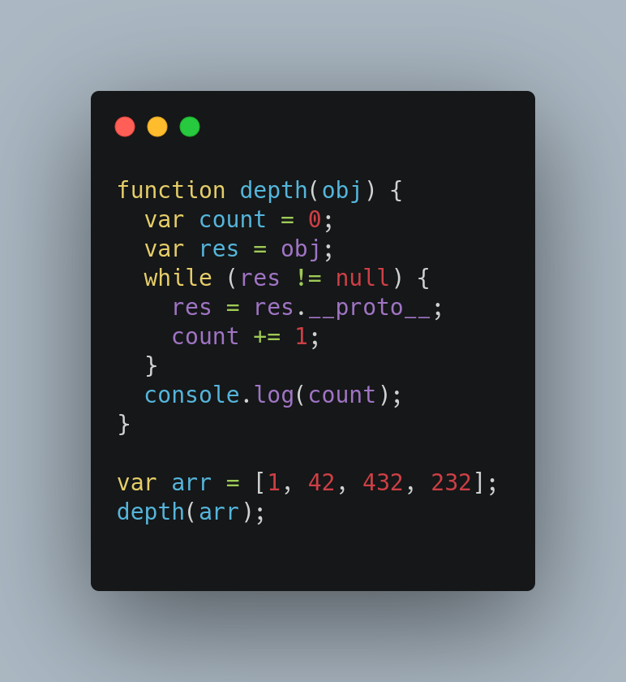

Prototypes in JavaScript is nothing but a special set of properties which an object holds. Almost everything in JavaScript is derived from Object. Each object holds it's own set of prototype properties.
var fooFunc = function() {
return {
foo: 42
}
};
fooFunc.prototype.bar = 'baz';
var fooVal = fooFunc();
console.log(fooVal); // {foo: 42}
console.log(fooFunc.prototype); // {bar: "baz", constructor: ƒ}
Whenever we create an instance of any class, the prototype of the class is created in object as well. we have to check it in __proto__ property. this property contains the prototype of it’s class
